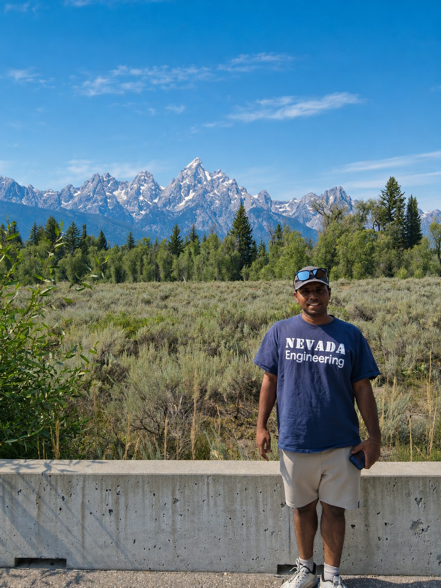

Purushoth Velayuthan


Hi! I’m Purushoth, a computer science graduate student at the University of Nevada, Reno. I work with Prof. Alireza Tavakkoli in the Human-Machine Perception Lab. I study how speech models represent words and voices, especially in languages such as Sinhala.
Before UNR, I studied electrical and electronics engineering at NIT Tiruchirappalli and worked as an AI engineer at Pekoe.ai. At Idaho National Laboratory, I studied how to recognize unfamiliar radio signals in noise.
Outside of research, I spend a lot of time on the court. I played tennis for my high school team and have since taken up pickleball, which I’ve become pretty good at! I enjoy most racket sports, including tennis, badminton, and table tennis. If you’re up for a game, I’d love to catch up on the courts :)
I’m looking for collaborators in speech and audio research. If you’re interested in speech tokenization or low-resource speech translation, please email me.
News
- We submitted Sinhala Audio Embedding Benchmark and Evaluation to NAACL 2027 on October 12. With Tharindu Ranasinghe, I evaluate how pretrained speech encoders represent speakers and spoken content in Sinhala, and how their performance varies across tasks.
- Our paper, Large-scale Multilingual News Image Captioning with LLMs, was accepted at EMNLP 2026! This collaborative work explores multilingual caption generation for news photographs using large language models.
- I started my summer AI/ML research internship at Idaho National Laboratory on June 6, working with Anna Quach. My research focuses on learning temporal patterns in radio signals across noise levels and using signal grammar to recognize unfamiliar waveforms.
- I mentored undergraduate students on grapheme-kit: Grapheme-Level Metrics and Text Processing for Multilingual NLP. Together, we worked on grapheme-level text processing and evaluation for complex scripts, including Tamil and Sinhala.
- For the Spring 2026 semester at UNR, I served as lead instructor for the large language models component of GRAD 778: Elements of Research Computing. I also served as a teaching assistant for CS 687: Fundamentals of Deep Learning.
- Our paper, Evaluating Robustness of Vision-Language Models under Noisy Conditions, was accepted at IEEE CCWC 2026. With Alireza Tavakkoli, I examine how environmental noise affects vision-language model predictions.
- I received the Graduate Dean’s Merit Scholarship at the University of Nevada, Reno for the 2025–2026 academic year, recognizing academic achievement and promise of productive scholarship.
- I began working on audio AI agents for UNR’s nursing school through the Human-Machine Perception Lab. The project supports nursing and clinical assistance, including automated electronic health record documentation and nursing evaluations.
My profiles: GitHub · Google Scholar · LinkedIn.
Institutional pages: University of Nevada, Reno · NIT Tiruchirappalli.
Current involvements:- Idaho National Laboratory — Signal grammar learning for open-set RF waveform recognition, working with Anna Quach.
- Research with Tharindu Ranasinghe — Exploring adaptive speech tokenization for low-resource languages.
[English] Purushoth Velayuthan, [Tamil] புருஷோத் வேலாயுதன், [Sinhala] පුරුෂෝත් වේලායුතන්, [Chinese] 普鲁绍特·韦拉尤坦 (Pǔlǔshàotè Wéilāyóutǎn), [German] Purushoth Velayuthan